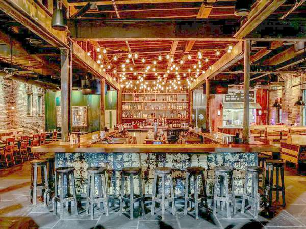

Capo is located in Southie, has a giant upstairs section where you can have enjoy a snack, dinner, or drink, before heading downstairs to what is known as Capo Basement

The Broadway:
The Broadway is located in Southie and is one of the many bars in this area with a big upstairs portion where you can eat, drink, or just chat with friends

Loco:
Loco is located in Southie and is one of the newer more popular bars in the area. Here you can enjoy a taco and margarita before heading to the back to join the Loco Lounge
